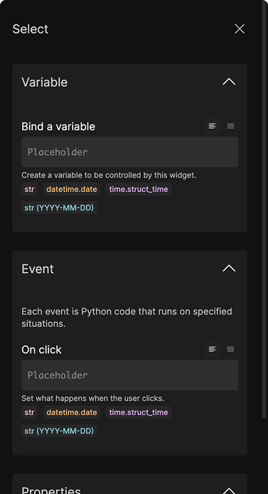
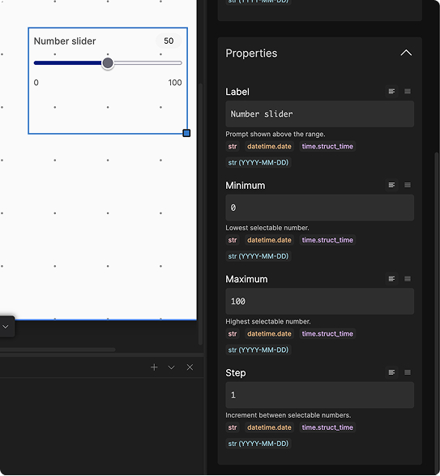
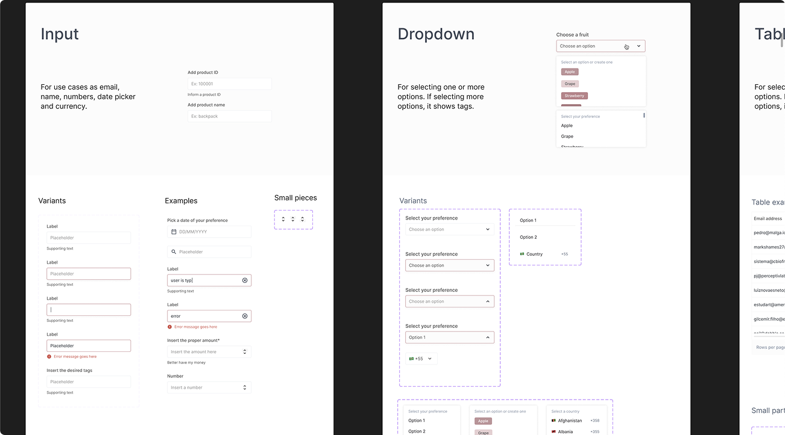

In search of product-market fit, Abstra was exploring whether a simpler way to build complex internal tools would drive developer adoption.
As the product designer, I worked on the product concept, user testing, and interaction specifications, in order to contribute with the search for product-market fit.
Internal tools have complex interactions and a direct effect on companies’ productivity. Developers often build them without dedicated design support.
Abstra could take on much of that design work through a system that already accounted for layout, styling, and interaction states while keeping layout assembly simple.
Abstra was a VS Code plugin for composing interfaces from ready-made widgets, connecting them to business rules in Python, and deploying internal tools within the developer’s coding workflow.
The CEO proposed VS Code as a distribution strategy to meet developers where they already worked and reduce switching between the IDE, terminal, and browser.
The visual builder had to reduce interface work without limiting how engineers wrote the business rules.
The design challenge was to define where to give developers control and where the system should make a decision for them.
The right-hand panel allowed users to enter simple Python.


The design system was the product. It defined how components behaved as a system, abstracting the front-end layer.

Size, placement, and spacing were given by different pieces of the foundation set. Each was responsible for its own scope to ensure a good UI composition.
Grid
Placing widgets on a 12‑column canvas.
Spacing
An 8px inner margin keeps compositions consistent.
Components
Define each widget’s purpose and behavior.
The grid is a canvas and it establishes where the components can be placed.
Users could place components inside 12 columns, and their height would follow a strict rectangular-block system that ensured different heights would still keep alignment.
This decision separated choosing where a widget belonged from adjusting it's margin and padding.
Video: placing multiple components on the screen.
While the grid handled placement, each component carried its own spacing.
An 8px internal margin helped nearby components read as a group without making content in separate columns feel connected.
This introduced a visual tradeoff: some compositions had uncomfortable space between columns. Because the immediate goal was to validate product-market fit, I left that refinement for a later iteration.
Components were flexible in their purpose and restrained in their styling.
The styling aimed to make Abstra recognizable through consistent composition while leaving room for the client’s brand.
My major reference was Notion.
Video: ALTERNATING FROM THE GRID TO THE LAYOUT
For more complex interfaces, containers needed their own rules. The sidebar, for example, could receive components just as a canvas but with a restricted area.
Later interaction specifications made that boundary explicit: a smaller set of components could be dropped into a sidebar, while modals had three canvas sizes. Reusing the composition model still required defining what each container could accept.
The tool separated editing from testing, allowing a switch with keyboard keys.
In editing, selecting a widget would expose its properties in the Inspector, with changes reflected on the canvas. In testing, the canvas would respond as the finished tool, with a way back to editing. The same click needed a clear meaning in each mode: configure the component or use it.
Video: ALTERNATING between edit and test
Developers could bring their brand by entering a single hexadecimal value for a light and dark theme.
The palette derived from that color had to work across surfaces and states. The later theme specification kept light and dark surfaces fixed and required the generated colors to preserve contrast with backgrounds and labels.
Video: ready interface, applying different colors and showing it change.
Interfaces composed with Abstra VS Code
We launched on Product Hunt and the VS Code Marketplace. The plugin recorded 7,000 downloads in its first week.
A YouTube overview spread organically, and VS Code featured Abstra on the Marketplace homepage for two weeks.
The design reduced the effort of building an internal tool's interface. It also gave the business team a working product to demonstrate on sales calls and a consistent, high-quality answer to “how does it work?”
✢ ✢ ✢